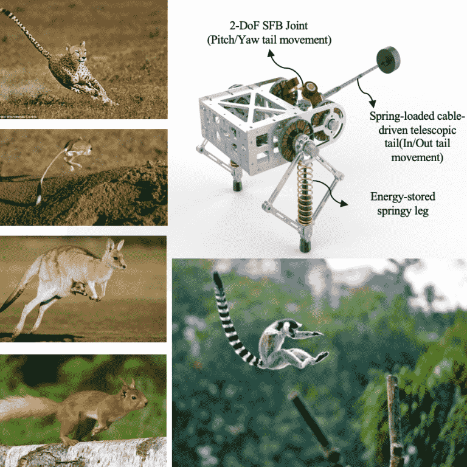
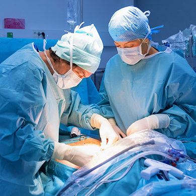

Biorobotics Research Development

One research pillar is to develop robots with greater agility, efficiency, and robustness comparable to its biological counterpart. We focus on developing new methods of design, analysis, and optimization of novel robots and mechanisms as well as designing algorithms that exploit the mechanical properties to achieve exceptional physical performance.
These days the lab primarily focuses on building novel robots to understand the essence of external appendages in dynamic locomotion. We also explore new ways to achieve real time feedback control for nonholonomic or underactuated systems.
Medical Technology Development

The other pillar is to develop technology to improve safety, accessibility to confined spaces, and efficacy for robotic-assisted surgery. We like to leverage the design and control knowledge, together with medical science to create novel robotic solutions to address fundamental clinical questions, overcome limitations of existing medical devices, as well as enable new medical treatment.
Lab members work closely with industrial partners, technical experts, and physicians to translate these technologies into products that meet real-world medical needs. Current research projects focus on the development of novel robotic retraction systems, flexible instrumentation, and miniaturized tools for confined space bone work.